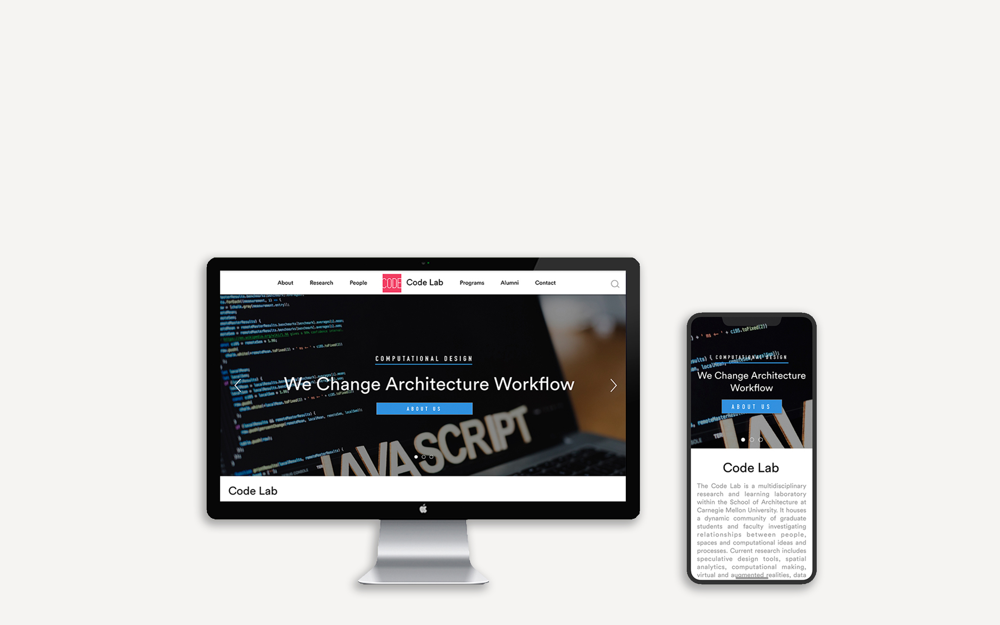

This Project is still under construction
Project Type: Web design & development
Roles: Web Designer & Developer
Team: Individual work
Timeline: Spring 2019
The Code Lab is a multidisciplinary research and learning laboratory within the School of Architecture at Carnegie Mellon University. It houses a dynamic community of graduate students and faculty investigating relationships between people, spaces and computational ideas and processes. Current research includes speculative design tools, spatial analytics, computational making, virtual and augmented realities, data visualization, architectural robotics, tactical media, as well as research into historical and theoretical questions concerning technology in design. Code Lab faculty and students often collaborate with partners in the scientific fields and the humanities, and endeavor to form and maintain alliances with peer centers in academia and industry both nationally and internationally.
The current official website of codelab is outdated(link Source)
As a solo design & developer for the project, we started re-design the general content and workflow since January 2019. hopefully the work will be done around May.